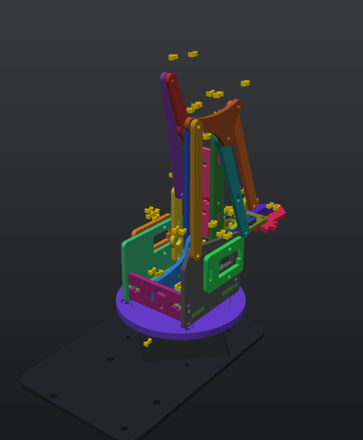
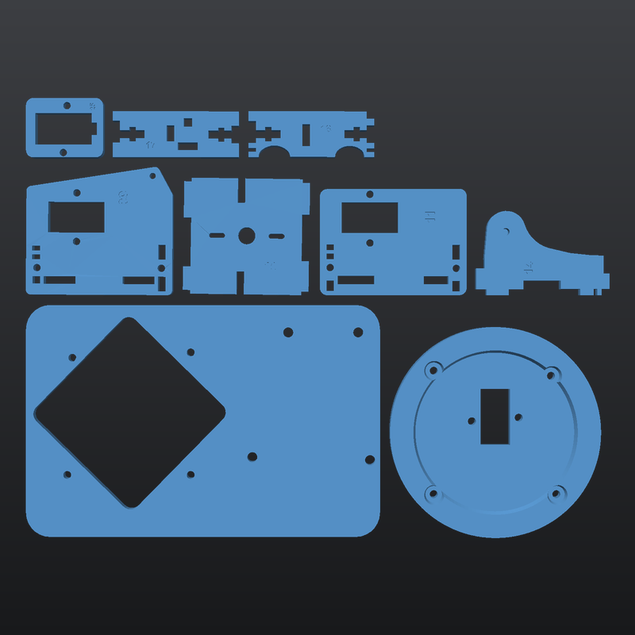
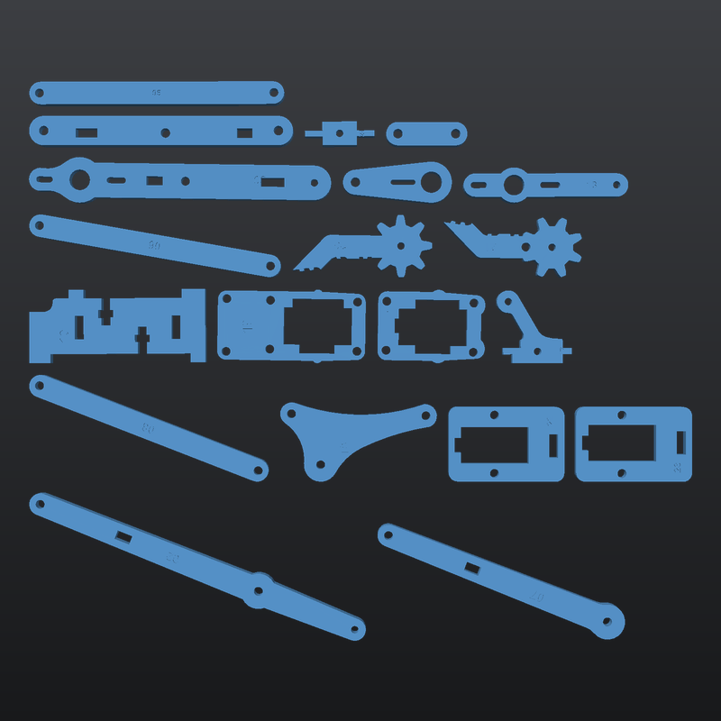
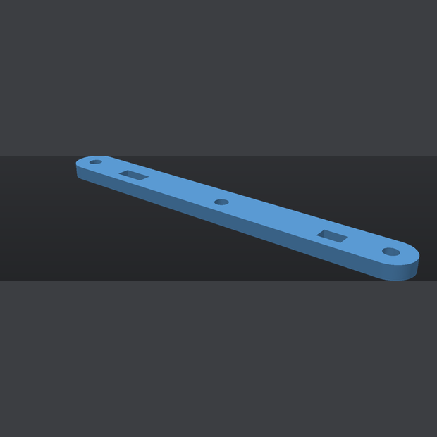
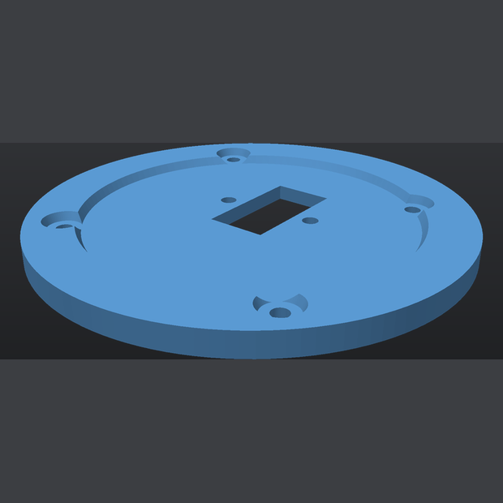
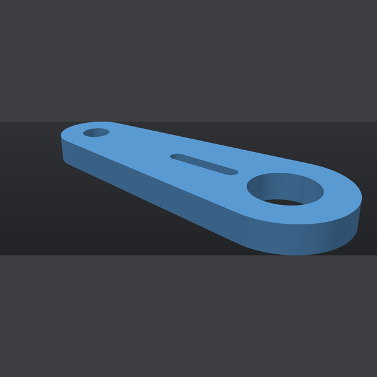
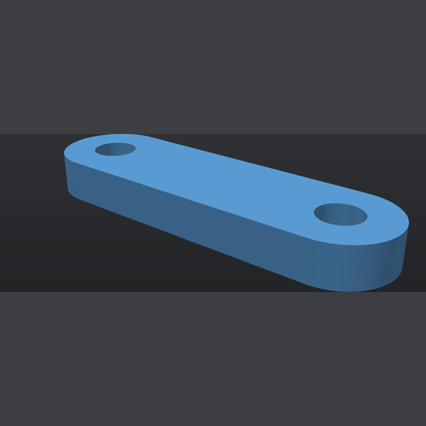
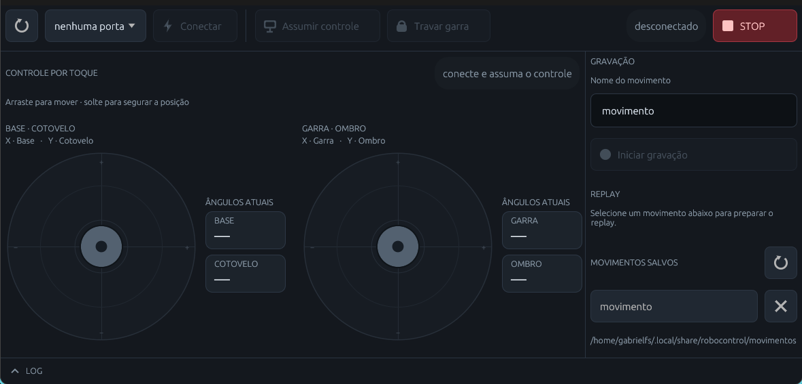

Braço robótico
4-DOF
Quatro eixos, dois joysticks e um app que grava e repete movimentos. Peças em PLA na Bambu Lab A1, firmware próprio e controle híbrido: o firmware continua dono do movimento, então um comando perdido no USB não vira tranco.

Um braço que obedece sem largar o controle
O app propõe alvos; a placa executa com rampa, limites mecânicos e hold. O joystick físico tem a palavra final.
Base, ombro, cotovelo e garra
Um SG90 por articulação, com paralelogramo duplo no braço para manter o punho nivelado.
PC e joystick no mesmo barramento
Assumir o controle pelo app adota os ângulos atuais; tocar no joystick devolve o comando à placa.
Movimentos salvos em disco
Grave, nomeie e repita sequências. Os arquivos ficam em ~/.local/share/robocontrol/movimentos/
Dois pratos, uma cor
Projeto monocromático em PLA preto. Sem torre de purga e sem troca de filamento.
Como o braço fica montado
Quatro subconjuntos, do chassi à garra. O manual traz as fotos e o passo a passo; o guia resume o hardware e as peças novas.
-
ETAPA 1
Chassi, base e Yaw 01 · 17 · 18 · 25 · 16 · 12
Porcas cativas, espaçadores M3×24 e o Servo 1 no berço. Calibre o servo em 90° antes de fechar a mesa.
-
ETAPA 2
Torres centrais 09 · 11 · 14 · 22 · 23
Servos 2 e 3 espelhados nas torres, unidos pelo espaçador central com dois M3×30. Cabeamento passa por dentro.
-
ETAPA 3
Braço e paralelogramo 02 · 03 · 04 · 05 · 06 · 07 · 08 · 10 · 13
Hastes mestras, antebraço e o balancim triangular que coordena o paralelismo. Nyloc sem prensar o PLA.
-
ETAPA 4
Cabeçote e garra 15 · 19 · 20 · 21 · 24 · 27 · 28 · H1 · H2
Servo 4 no suporte, manivela H1 no estriado e biela H2 até o dedo móvel. A engrenagem 26 saiu do projeto.
Dois pratos, ~102 g
3MF já fatiados para a A1, em Bambu PLA Basic Preto. Re-fatia se mudar a geometria de alguma peça.


| Prato | Peças | Tempo | Filamento |
|---|---|---|---|
| 1 · Chassi | 9 | 2h 10min | 66,3 g |
| 2 · Braço e garra | 20 | 2h 03min | 36,0 g |
| Total | 29 | 4h 13min | 102,3 g |
A revisão de novembro
A 04 e a 12 mudaram de geometria; as peças H1 e H2 assumiram o acionamento da garra no lugar da engrenagem 26.




Catálogo completo no manual — as 29 peças com foto, dimensões, peso, tempo e função.
Software
O RoboControl conversa com o firmware pela USB a 115200 baud. O app propõe alvos; a placa executa a rampa, os limites e o hold.

O que tem
- padsDois controles de toque: base/cotovelo à esquerda, garra/ombro à direita. Soltar o dedo centraliza e segura a posição.
- assumirAssume o controle partindo dos ângulos atuais. O joystick físico devolve o comando à placa.
- travar garraMantém a pressão da pinça sem forçar o servo.
- gravaçãoNomeie, grave e salve o movimento em
~/.local/share/robocontrol/movimentos/. - replayLista os movimentos salvos, repete e exclui com confirmação.
- STOPPara o movimento e desenergiza os servos em ~0,6 s.
- logMensagens de conexão e status, recolhíveis.
Rodar
# rodar (Linux, macOS e Windows)
cd app && cargo run --release
# Linux: instalar no menu
cd app && ./install.shInstalação, protocolo e atalhos do app · firmware/braco_4dof
Requisitos
dialout + libs de build| Sistema | Porta | Onde ficam os movimentos |
|---|---|---|
| Linux | /dev/ttyACM0 | ~/.local/share/robocontrol/movimentos |
| macOS | /dev/cu.usbmodem* | ~/.local/share/robocontrol/movimentos |
| Windows | COM3 | %APPDATA%\robocontrol\movimentos |
O install.sh é só Linux. Nos outros sistemas use cargo run --release; no Windows o binário fica em target\release\robocontrol.exe. Firmware: Arduino IDE (placa Arduino Uno) ou arduino-cli, sketch em firmware/braco_4dof/. No Linux, adicione o usuário ao grupo dialout.
Arquivos
Manual, guia, CAD e os arquivos de impressão.
Créditos
As peças 3D deste projeto foram modeladas a partir do modelo de referência “Aula 21 - Braço Robótico”, de Robótica Paraná (@roboticaparana), publicado no Sketchfab sob licença CC BY 4.0.
As peças foram remodeladas, dimensionadas para impressão 3D e adaptadas à Bambu Lab A1. Os arquivos de referência ficam em ref/mdf/, com o crédito acima. O modelo original não é de autoria deste projeto.